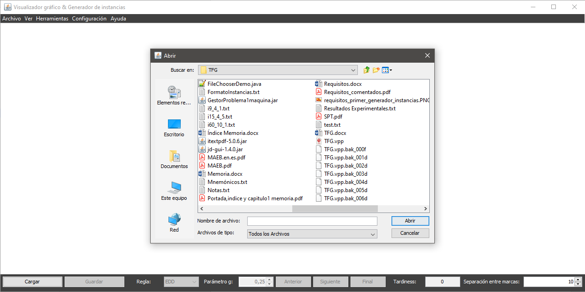

Para acceder al generador de instancias no es necesario que se dé ninguna condición específica y puede hacerse a través de una de estas opciones:
Una vez en el diálogo de generación de instancias el usuario puede especificar los parámetros con los que quiere crear su instancia:
Al cambiar los valores de estos parámetros el usuario puede observar el número de intervalos de capacidad con el que se creará la instancia.
Una vez accedida a la opción se desplegará un diálogo donde el usuario podrá navegar por sus directorios y escoger el nombre del fichero a guardar (no es necesario especificar la extensión, el sistema automáticamente asignará la extensión txt al archivo creado). El fichero generado podrá visualizarse con cualquier editor de textos y podrá ser cargado en la aplicación.
Una vez el fichero se genere correctamente, el sistema informará al usuario: